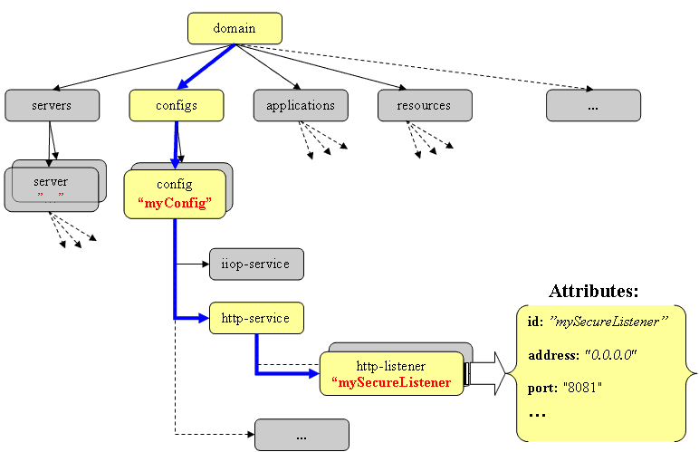
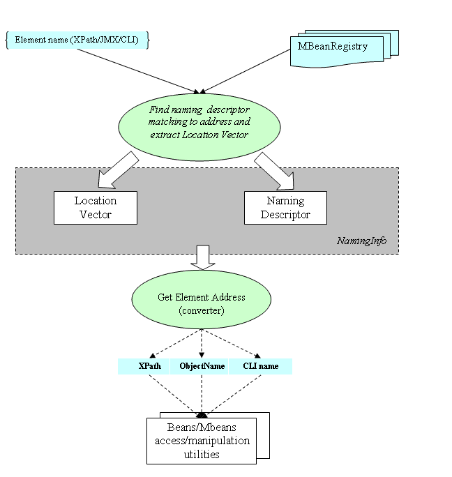

| Return to GlassFish Configuration Management Page | GlassFish Project Home | How-Tos |
GlassFish Configuration Naming (naming) is a set of metadata and APIs to support identification of and
access to configuration data such as elements, attributes, descriptions and properties. This is a
critical part of the Configuration Management module, as GlassFish has complex configuration data
structures and exposes a variety of interfaces for GUI, CLI, and JMX MBeans.
First, we will discuss different types of names and APIs in GlassFish Configuration, then discuss the metadata driven approach to managing configuration naming.
Page Contents
Configuration tree.
GlassFish Configuration is defined by the content of domain.xml file (located in {install-directory}/domains/{domain name}/config directory). It is represented a hierarchical tree of the configuration elements. Elements could contain attributes and special sub-elements - description/properties/system-properties. The following figure shows a fragment of the GlassFish configuration tree.

Figure 1: Configuration elements in domain.xml
The above configuration fragment includes the http-listener named "mySecureListener", located in config tree named "myConfig". Starting from here, we will refer to this element in the following samples.
Addressing the configuration elements: XML XPath, JMX ObjectName and CLI dotted name.
There are four major consumers for Configuration Management data and services: GlassFish backend modules, MBeans, Command Line and Graphic user interfaces (CLI and GUI). These components point to the configuration entity (element,attribute,property etc.) by using different types of addresses. Having different addresses for the same entity is necessary for several reasons, including external requiremenets (e.g. JMX ObjectNames rules) or usability (CLI).

Figure 2: Major configuration clients
GlassFish provides two types of generic configuration APIs to manage config elements/properties and attributes.
Backend modules can access the configuration through Config Beans. Config Beans are the Java classes, programmatically generated accordingly to domain XML schema. Each Config Bean represents a corresponding configuration element and provides the generic configuration API: set/get attribute values, list/create/delete child Config Beans and properties.
External configuration requests (GUI, CLI, and JMX) are served by Config MBeans - Dynamic JMX MBeans. These MBeans are binded to corresponding Config Beans and provide the similar generic operations.
Config Beans and XPath.
GlassFish provides a generic configuration API for backend modules and MBeans to manage config elements/properties and attributes. Config Bean objects are programmatically generated according to sun-domain.dtd. Each Config Bean represents the corresponding configuration element and provides generic configuration API: set/get attribute values, list/create/delete child Config Beans and properties.
Backend modules use two approaches to get ConfigBeans for given configuration elements. First, they
can use navigation through configuration tree, starting from the tree root element's bean ("domain"
element). For example, to obtain Config Bean reprenting http-listener named "mySecureListener"
located in config tree named "myConfig", the following calls can be performed:
Domain domain =(Domain)myConfigContext.getRootBean; |
Another method of Config Beans discovery uses xml element XPath. XPath is the popular language for
addressing the xml-file components (elements/attributes etc.). The http listener in the above example
would have the following XPath address:
/domain/configs/config[@name='myConfig']/http-service/http-listener[@id='mySecureListener'].
Configuration Management provides util API for dicovery Config Beans by their XPathes. So, the same
Config Bean could be retrieved by the following code:
HttpListener httpListener = (HttpListener)ConfigBeanFactory.getConfigBeanByXPath( |
Config MBeans and ObjectNames.
Config Beans are used by backend modules to retrieve and update configuration data. These beans are inaccessible for client code. J2EE application server provides client API through JMX MBeans. They are available to JMX connected client. GlassFish provides special Config MBeans (Admin MBeans) bound to the corresponding configuration element and its Config Bean. We can consider Config MBeans as client form of Config Beans. Special name - ObjectName is assigned to each MBean. You can find its format description in JMX specification.
Config MBean for our example's http listener element would have the following ObjectName:
"com.appserv:type=http-listener,config=myConfig,id=mySecureListener".
CLI Dotted names.
Both XPath and ObjectName are still too complex for using them as client UI names for addressed configuration elements. So, GlassFish's user commands interface (CLI) uses so-called dotted names for access to Config MBeans. These names are used in generic config operations such as get, set and list.
Our example http listener element will be addressed by the following dotted name -
"myConfig.http-service.http-listener.mySecureListener"
Element generic addressing: location vector and name templates.
Let's consider XPath address for configuration element from above sample:
|
It represents the fully qualified path from the tree root (/domain element) to http listener named ‘mySecureListener’ located in the configuration named ‘myConfig’. On that way, there were two nodes (configs and http-service) that have multiple descendants of the same type (config and http-listener respectively). String values of their primary keys – ‘myConfig’ and ‘mySecureListener’ represent the choice of sub-branches leading to the given element on that way. These values marked by italic red font.
Now, let’s consider the XPath address for another http listener, which has the different name
and belongs to the different configuration. It could be:
|
These two addresses are differed only by primary key values. All other parts of addresses, except of these values will be exactly the same! It means that if we know the id of desired http listener and name of configuration it belongs to, then we can easily produce XPath address for desired element by replacing the key values in above XPath address to required ones. Let's call the set of such primary key values as element location vector. This vector will have the same size and member meaning for all elements of the same type. In our case, the two we deal with "http-listener" element with location {"myConfig", "mySecureListener"}.
Other words, we can say that every http listener in doman.xml file has XPath address equals to "/domain/configs/config[@name='{1}']/http-service/http-listener[@id='{2}']", where {1} should be replaced by actual name of config containing the addressing http listener, and {2} is place holder for actual http-listener id value. I.e. we have got XPath template for all http listener elements in whole configuration tree and if we know location (primary key values) for an element we can easily map this template to its XPath address. XPath for the elements of the same type always will match to the corresponding XPath template.
Please, note that element's “type” in this context is not uniquely specified by XML tag of an element. For example, according to domain.dtd, “ssl” element can belong to different parent elements: “http-listener”, ”ssl-client-config”, ”iiop-listener”, or ”jmx-connector”. It means that there are four different element types (e.g. “http listener ssl”) with own XPath templates for “ssl” XML element in domain.xml.
Having XPath address template for each element type is pretty obvious, because XPath address is
representing the fully qualified path to the element and this address is completely defined by XML
tree topology. Despite of XPath, two other addresses: JMX ObjectName and CLI dotted name are not
predefined by element location, but chosen by UI designers in accordance with design requirements and
usability. Let’s look at all these three addresses again:
|
It is amazing! The other two addresses also contain the same primary key values, which helped us to find the right path on the way from the tree root to the required element for XPath construction! Let’s replace these values by placeholders as we did for XPath earlier:
|
Now, we have set of templates for all addresses for certain type element. Strictly speaking, such templates will exist not just for given address types, but for any well-defined generic string type address. We will consider the element type address is well-defined, if any possible address uniquely identifiers the element type and location of the desired element. XPath address is always well-defined, but ObjectName and dotted name templates should be chosen the way to avoid an ambiguity. For example, we can choose another template for dotted name or alias of http-listener element – "{1}.listener.{2} " or "HTTP-listener. {1}.{2}” . This address could be well-defined if it is not confused with other element templates. Again, in the present discussion we are limited by type of addresses we deal with – JMX ObjectNames and CLI dotted names with their format restrictions, but template approach will work with any other generic addresses suitable for UI. For example the following pattern could also produce the string address uniquely identifying the given element:
“The http listener named {1} located in the configuration
named {2}”
|
Naming metadata.
Naming metadata is conained in Admin MBean Descriptors file (you can find it in the GlassFish repository) and represented by set of assigned name templates for each addressable element(like those three above templates for the sample element). Let's see how it looks for http-listener element:
<!-- +++++++++ 27. http-listener +++++++++++ -->
<mbean name="http-listener" group="config" className="com.sun.enterprise.admin.mbeans.HttpListenerMBean" >
<descriptor>
<field name="elementChangeEvent" value="com.sun.enterprise.admin.event.http.HSHttpListenerEvent" />
<field name="ObjectName" value="{0}:type=http-listener,id={2},config={1},category=config" />
<field name="xpath" value="/domain/configs/config[@name='{1}']/http-service/http-listener[@id='{2}']" />
<field name="CLIName" value="{1}.http-service.http-listener.{2}" />
</descriptor>
<attribute name="server-name" >
<descriptor>
<field name="emptyValueAllowed" value="true" />
</descriptor>
</attribute>
</mbean>
|
Naming templates extracted from each MBean decriptor is contained in the corresponding MBeanNamingDescriptor class object. This object provides two basic operations: - check the matching with concrete address value of any allowed type (XPath/ObjectName/CLI-name); - extracts Element Location Vector for matching address;
How It Works.
As we could see from the previous paragraphs, most naming services based on address values conversion and retrieval objects (beans/MBeans) by their addresses. Also we could see that having any type address for given configuration element, we can easily find proper MBeanNamingDescriptor matching to this value and obtain element's Location Vector.
GlassFish Config Naming infrastructure objects ( MBeanNamingDescriptor, MBeanNamingInfo classes etc.) provide the whole spectrum of the mutual address values convertion (XPath to ObjecNames, dottednames to XPath etc.) and lifecircle operations, like "instantiate MBean by certain address". The following figure describes typical scenarios of configuration naming usage.

Figure 3: Configuration naming typical usage.
Naming usage.
Thus, there are three types of names possibly pointing to the same configuration element: XPath value, JMX ObjectName, and CLI dotted name in the GlassFish. Let's consider the cases when GlassFish uses them:
- In the beginning of the application server startup, domain.xml configuration file is parsing and converted to set of corresponding Config Beans, containing the proper XPath addresses;
- Every time when new Config Bean created, corresponding Config MBean is instantiated in DAS under the proper ObjectName;
- Every time when new Config MBean is created, - corresponding dotted-name is formed and registered in the Dotted Names Manager;
- Admin modules and HTML adapters use JMX ObjectNames for access config MBeans;
- CLI client uses dotted names to address configuration element, attribute, or property; these names are passing to backend’s dotted name manager;
- Dotted names manager converts CLI dotted names for get/set/list operations to ObjectNames of MBeans representing the same configuration element;
- Backend modules and MBeans use configuration elements XPathes to obtain corresponding Config Beans;
- Various converters applied to names, transforming them to another address form. E.g. MBean operations often use convertion of ConfigBeans (XPathes) to JMX ObjectNames as returning values for config operations;
- XPath address is intensively using by Dynamic Reconfiguration process and Admin Validator;
- XPathes of the updated elements are part of ConfigChangeEvents analyzed by Admin Validator;
Naming API classes and metadata files in the GlassFish repository.
Naming metadata can be found in the Admin MBean descriptors file.
Naming API classes are resided in admin sub module of admin-core in the GlassFish repository